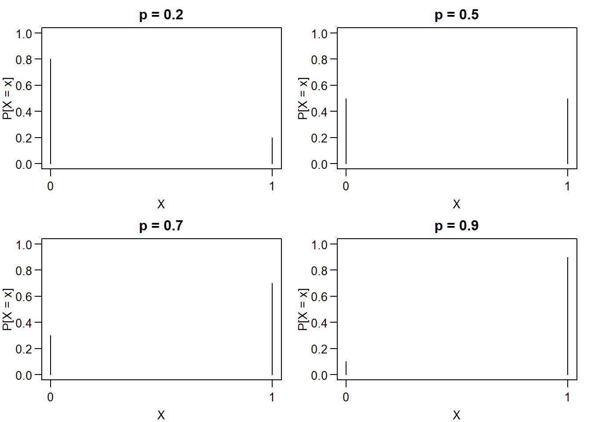
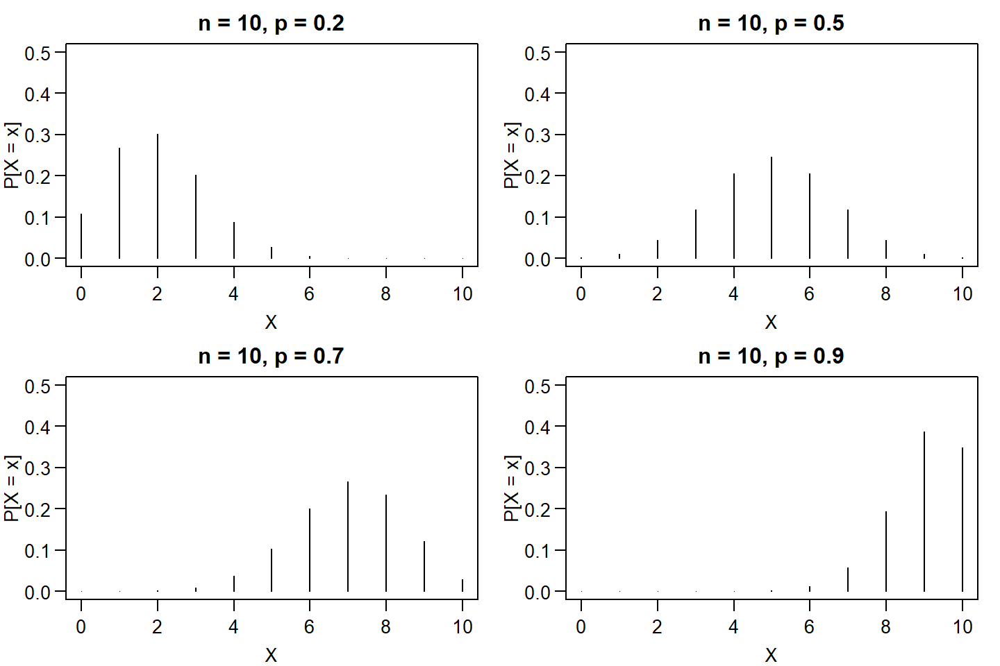
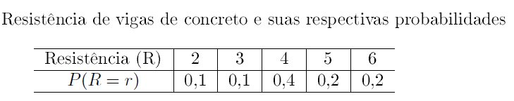

Distribuição Binomial
Introdução
Os modelos de probabilidade são utilizados para descrever vários fenômenos aleatórios ou situações que encontramos na natureza, ou experimentos por nós construídos. Esses modelos são expressos por uma família de distribuições de probabilidade que dependem de um ou mais parâmetros. Observa-se que um modelo deve representar, na medida do possível, a complexidade que envolve o mundo real da população em estudo. Neste sentido, é importante notar que uma variável aleatória discreta é completamente caracterizada pela sua função probabilidade, sua média e variância.
Ensaio de Bernoulli
O ensaio (ou experimento) de Bernpulli é aquele ao qual podem ser associados apenas dois resultados a partir de um experimento aleatório: sucesso (se acontecer o evento de interesse) ou fracasso (se não acontecer o evento de interesse).
Exemplos de Ensaios de Bernoulli
Lançar uma moeda - Resultados: Cara ou Coroa;
Inseminação artificial - Resultados: Engravidar ou não;
Administrar um medicamento para o alívio de dores - Resultados: O medicamento pode fazer efeito ou não
Teste de germinação de uma semente - Resultado: Germinou ou Não
Assim, tem-se, então, uma variável aleatória que assume valor \(1\) caso ocorra o evento (sucesso) ou o valor \(0\) caso não ocorra (fracasso).
Distribuição de Bernoulli
Uma variável aleatória \(X\) segue o modelo Bernoulli se assume apenas os valores \(0\) (“fracasso”) ou \(1\) (“sucesso”). Sua função de probabilidade é dada por \[ P[X = x] = p^x (1-p)^{1-x}, \quad \quad x = 0, 1 \] em que o parâmetro \(0 \leq p \leq 1\) é a probabilidade de sucesso.
Esperança e Variância: \(\mbox{E}(X) = p \quad \mbox{e} \quad \mbox{Var}(X) = p\,(1-p)\)
Notação: \(X \sim \text{Bernoulli}\,(p)\).
par(mfrow=c(2,2), mar=c(3,3,2,1), mgp=c(2,0.7,0), las=1)
plot(0:1, dbinom(x = 0:1, size = 1, prob = .2), type = "h",
xlab = "X", ylab = "P[X = x]", main = "p = 0.2",
ylim = c(0,1), axes = FALSE); box(); axis(1,0:1); axis(2)
plot(0:1, dbinom(x = 0:1, size = 1, prob = .5), type = "h",
xlab = "X", ylab = "P[X = x]", main = "p = 0.5",
ylim = c(0,1), axes = FALSE); box(); axis(1,0:1); axis(2)
plot(0:1, dbinom(x = 0:1, size = 1, prob = .7), type = "h",
xlab = "X", ylab = "P[X = x]", main = "p = 0.7",
ylim = c(0,1), axes = FALSE); box(); axis(1,0:1); axis(2)
plot(0:1, dbinom(x = 0:1, size = 1, prob = .9), type = "h",
xlab = "X", ylab = "P[X = x]", main = "p = 0.9",
ylim = c(0,1), axes = FALSE); box(); axis(1,0:1); axis(2)
Distribuição Binomial
Seja um experimento realizado dentro das seguintes condições:
São realizados \(n\) “ensaios” de Bernoulli independentes.
Cada ensaio só pode ter dois resultados possíveis: “sucesso” ou “fracasso”.
A probabilidade \(p\) de sucesso em cada ensaio é a mesma.
A partir disso, pode-se definir a variável aleatória \(X\) como o número total de sucessos nos \(n\) ensaios de Bernoulli. Portanto, \(X\) poderá assumir os valores \(0,1,\ldots,n\).
Pergunta: Qual é a função de probabilidade de \(X\) ?
Vamos determinar a função de probabilidade de \(X\), por meio da probabilidade de um número genérico \(x\) de sucessos. Assim, suponha que ocorram sucessos (1) apenas nos \(x\) primeiros ensaios, e fracassos (0) nos \(n-x\) ensaios restantes.
Logo,
\[\underbrace{1,1,1,\ldots,1,}_{x} \underbrace{0,0,0,\ldots,0}_{n-x}\] Como os ensaios são independentes, a probabilidade de ocorrência de \(x\) sucessos em \(n\) tentativas é uma extensão do modelo de Bernoulli para \(n\) ensaios, ou seja,
\[\underbrace{p\cdot p \cdot p \cdot \cdot \cdot p \cdot}_{x} \underbrace{(1-p)\cdot (1-p) \cdot (1-p) \cdot \cdot \cdot (1-p)}_{n-x} = p^{x} (1-p)^{n-x}\] Porém, o evento: “\(x\) sucessos em \(n\) ensaios” pode ocorrer de diferentes maneiras (ordens) distintas, todas com a mesma probabilidade.
Como o número de ordens é o número de combinações de \(n\) elementos tomados \(x\) a \(x\), então a probabilidade de ocorrerem \(x\) sucessos em \(n\) ensaios de Bernoulli é representada por dada por
\[P(X=x)={n \choose x}\,p^{x}\,(1-p)^{n-x},\quad \quad x=0,1,\ldots,n\] em que
\[{n \choose x} = \frac{n!}{x!(n-x)!}\] é o coeficiente binomial que dá o número total de combinações possíveis de \(n\) elementos, com \(x\) sucessos.
Exemplos:
Número de caras no lançamento de 20 moedas;
Número de meninos entre 10 bebês;
Número de sementes germinadas em 100 sementes;
Número de peças defeituosas num lote com 1000 peças.
Esperança e Variância: \(\mbox{E}(X) = n\,p \quad \mbox{e} \quad \mbox{Var}(X) = n\,p\,(1-p)\)
Notação: \(X \sim \text{binomial}\,(n, p)\).
par(mfrow=c(2,2), mar=c(3,3,2,1), mgp=c(2,0.7,0), las=1)
plot(0:10, dbinom(x = 0:10, size = 10, prob = .2), type = "h",
xlab = "X", ylab = "P[X = x]", main = "n = 10, p = 0.2",
ylim = c(0,.5))
plot(0:10, dbinom(x = 0:10, size = 10, prob = .5), type = "h",
xlab = "X", ylab = "P[X = x]", main = "n = 10, p = 0.5",
ylim = c(0,.5))
plot(0:10, dbinom(x = 0:10, size = 10, prob = .7), type = "h",
xlab = "X", ylab = "P[X = x]", main = "n = 10, p = 0.7",
ylim = c(0,.5))
plot(0:10, dbinom(x = 0:10, size = 10, prob = .9), type = "h",
xlab = "X", ylab = "P[X = x]", main = "n = 10, p = 0.9",
ylim = c(0,.5))
Exercícios
- A probabilidade de que um bit transmitido através de um canal digital de transmissão seja recebido com erro é \(0,1\). Suponha também que as tentativas de transmissão sejam independentes. Seja \(X =\) número de bits transmitidos com erro nos próximos quatro bits transmitidos. Determine \(P(X = 2)\).
Solução:
Seja \(X\) : Número de bits transmitidos com erro nos próximos 4 bits.
Os valores obserdados de \(X = \{0,1,2,3,4\}\).
Observa-se que cada erro transmitido tem uma probabilidade de \(0,1\). Isto significa que \(p = P(\text{erro}) = 0,1\) é a probabilidade de sucesso. Além disso, temos que as transmissões são independentes.
Portanto, \(X \sim \text{binomial}\,(n = 4,\, p = 0,1)\).
Então,
\[P(X = 2) = {4 \choose 2}\,(0,1)^{2}\,(0,9)^{2} = 0,0486.\] Portanto, a probabilidade de serem transmitidos 2 bits com erros é \(0,0486\).
- Uma moeda honesta é lançada quatro vezes. Seja \(X\) a variável aleatória que representa o número de caras nos 4 lançamentos. Determine a probabilidade de
Ocorrer exatamente 2 caras em 4 lançamentos de uma moeda.
Ocorrer no máximo 3 caras em 4 lançamentos de uma moeda.
Solução b)
Seja \(X =\) Número de caras em 4 lançamentos de uma moeda honesta.
Observa-se que \(p = P(\text{cara}) = 0,5\) é a probabilidade de sucesso.
Então,
\[ \begin{eqnarray} P(X \leq 3) &=& P(X = 0) + P(X = 1) + P(X = 2) + P(X = 3) \\\\ &=& {4 \choose 0}\,(0,5)^{0}\,(0,5)^{4} + {4 \choose 1}\,(0,5)^{1}\,(0,5)^{3} + {4 \choose 2}\,(0,5)^{2}\,(0,5)^{2} + {4 \choose 3}\,(0,5)^{3}\,(0,5)^{1} \\\\ &=& 0,0625 + 0,25 + 0,3750 + 0,25 + 0,2500 \\\\ &=& 0,9375 \end{eqnarray} \] Portanto, a probabilidade de ocorrer no máximo 3 caras em 4 lançamentos é \(0,9375\).
Suponha que numa linha de produção a chance de se obter uma peça defeituosa é de 50\(\%\). Seleciona-se uma amostra de 10 peças para serem inspecionadas.Suponha que \(X\) é o número de peças defeituosa produzidas em único dia. Qual é a probabilidade de um remessa com 10 peças conter pelo menos quatro peças defeituosa.
Cada amostra de ar tem um percentual de 10\(\%\) de conter um determinado poluente orgânico. Considere 18 amostras que sejam independentes com relação à presença do poluente. Seja a variável aleatória, o número de amostras de ar que contêm o poluente orgânico, pergunta-se:
Calcule a probabilidade de que exatamente 2 amostras contenham o poluente.
Qual é a probabilidade de que pelo menos 4 amostras contenham o poluente.
- A resistência (em toneladas) de vigas de concreto produzidas por uma empresa comporta-se conforme a função de probabilidade abaixo:
knitr::include_graphics("img/resis.png")
Admita que essas vigas sejam aprovadas para uso em construções se suportarem pelo menos três toneladas. De um grande lote fabricado pela empresa, seleciona-se \(15\) vigas ao acaso. Pergunta-se:
Qual é a probabilidade de todas as vigas serem aptas para construções?
Qual é a probabilidade de no mínimo \(13\) vigas serem aptas?

Este conteúdo está disponível por meio da Licença Creative Commons 4.0